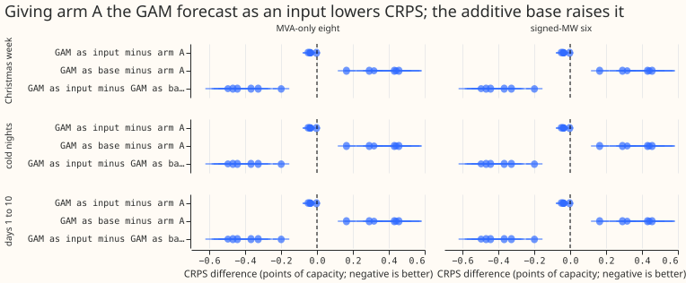
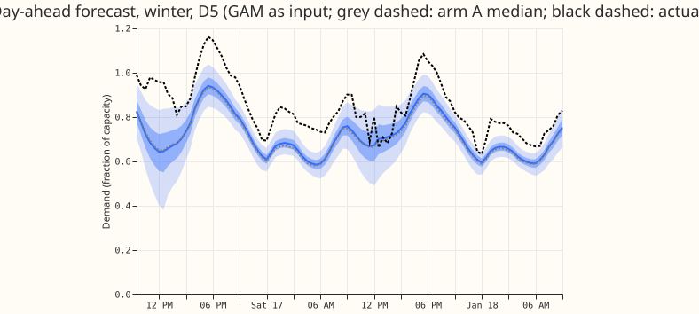
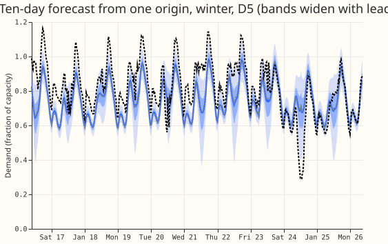
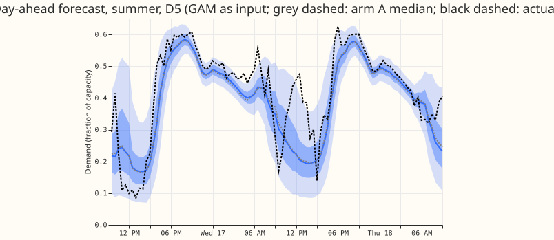
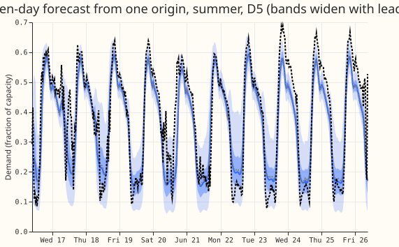

Does the out-of-fold forecast of the convex GAM, given to the pretrained pooled mixture density network as an input or as a base, improve Primary demand forecasts?
Take-home
Giving arm A the GAM's forecast as one extra input lowers CRPS by 0.036 points at the eight MVA-only Primaries. A gain of 0.036 is 1.1% of the score and is within 0.0005 of the minimum detectable effect of 0.0355, so the gain is real but marginal. At the signed-MW six the gain is 0.035 (Bonferroni interval -0.042 to -0.027), below that group's minimum detectable effect of 0.070. The tail pinball losses (q01, q05, q95, q99) and the pooled cold-night scores do not get worse. Using the GAM as an additive base for the neural network made the forecast worse by 0.291 at the eight. The GAM's own forecast is worse than the pretrained neural network's, and fine-tuning for 8 to 16 epochs does not recover the loss. The pre-registered rule is met narrowly for the input arm, and the requirement is a GAM in the serving path with its monthly refit.
All numbers are from experiment 425's arm A recipe on the five folds of experiment 449, rows with no labelled event (NGED's event labels are incomplete, so these rows may hold unlabelled real events).
Figures





Example forecasts are GAM-as-input, seed 0, D5, one origin each. The horizon of every stored forecast is 10 days (240 hours).
Arms
- A-ref (stored). Experiment 425's arm A (folder
ml-experiments/00425-*), run in experiment 397's loop with pretraining on ERA5-and-CAMS rows and fine-tuning at learning rate 2e-4, seeds 0 to 4, scored again and never refitted. - A-gam-in (
Gin). Two extra input columns, the standardised GAM forecast and a missing flag. The new first-layer weights start at zero. - A-gam-base (
Gbase). The GAM forecast shifts the mixture means byz_gamminus the frozen pretrained neural network's mixture mean, so training starts at the GAM forecast with the pretrained component offsets, weights, and spreads. Rows without a GAM value are the pretrained neural network. - Both arms start from experiment 425's stored pretrained arm A weights (no new pretraining), so the GAM input is learned in fine-tuning only and arm A is the matched reference. ERA5 pretraining years have no out-of-fold GAM.
- Deviation from the plan. The size line anticipated 50 new pretrained networks. None was pretrained, and the 50 fine-tuned networks start from experiment 425's stored pretrained weights.
- Stage 0 (the GAM). Stored monthly per-site T-all GAM fits of experiment 136 (six signed-MW Primaries) and experiment 252 arm A1 (eight MVA-only Primaries), no Kalman filter and no lagged-error input, driven by the calibrated ensemble mean to 240 h. The 14 Primaries are fitted per site, not pooled. Stage 0 took 2 min 10 s of CPU time in total and forecast every ensemble run from 2024-04. D15 and D18 have no fit, and D8 has none before 2025-07, so their rows carry the missing flag. Leads above 240 h train as "GAM missing" (experiment 425's rows run to 351 h).
- Settings shared by all arms. Monthly refits, five-seed quantile averages, 1.15 widening, five folds (2025-10, 2025-12, 2026-01, 2026-03, 2026-06), D15 and D18 cut before 2025-03-01, flagged zero half-hours dropped. The scores use 713,323 shared half-hours, of which 385,855 are at the eight. Fifty fine-tunes took about 90 s each on one GPU process, about 1.5 GPU-hours in total.
Headline numbers (CRPS in points of effective capacity, days 1 to 10; negative is a gain)
- Minimum detectable effect: 0.0355 at the eight, 0.070 at the six, 0.517 at D15 and D18, 0.061 at all 16 (arm A's five single seeds, experiment 428's formula; printed before any contrast).
- Absolute CRPS at the eight: arm A 3.363, GAM-as-input 3.327, GAM-as-base 3.654, BG2 3.563, manual heuristic 4.163, climatology 4.564. At the six: 2.734, 2.699, 2.898, 2.856, 3.760, 4.091.
- Gin minus A at the eight: -0.036 (Bonferroni -0.045 to -0.028; 95% -0.042 to -0.030). Cold nights -0.050 (-0.080 to -0.012; the 2026-03 fold alone is +0.061, and at the six it is +0.040). Christmas week -0.003 (-0.021 to +0.019; one year, report-only).
- Gbase minus A at the eight: +0.291 (+0.219 to +0.366). Cold nights +0.317, Christmas week +0.441.
- Per fold, Gin minus A at the eight: June -0.001, October -0.044, December -0.052, January -0.029, March -0.052. The gain is absent in the June fold.
- Per Primary (leave-one-site-out, from the results review): the Gin gain stays between -0.043 and -0.027; it is largest at D19 (-0.092), D4 (-0.079), and D8 (-0.058) and about zero or positive at D12, D22, and D3.
- D15 and D18 (report-only): Gin minus A +0.021 (95% interval +0.013 to +0.030; Bonferroni +0.011 to +0.034), so the GAM input slightly hurts where the GAM is missing.
- Tails, Gin minus A at the eight (pinball, upper one-sided 95% bound): q01 -0.004 (-0.003), q05 -0.011 (-0.009), q95 -0.010 (-0.008), q99 -0.004 (-0.003). Coverage at the eight: q95 0.946 and q99 0.990 for Gin against 0.949 and 0.991 for A. Gbase raises q05 pinball by 0.127 and q95 by 0.045.
- Decision rule for Gin at the eight: CRPS gain 0.036 against the minimum detectable effect 0.0355 (the rule is met only just: 0.0005 above); pooled cold nights and Christmas week do not worsen; no tail pinball loss worsens. The rule is met. Gbase fails it (CRPS +0.291).
- Avoidable-curtailment cost, signed-MW six, lead 12 to 36 h: the total over the five folds and the six Primaries, in millions of pounds, with a 95% bootstrap over the 30 (fold, Primary) cells. At f = 0.9: arm A 1.89, Gin 1.88, Gbase 1.25, BG2 1.37, manual heuristic 2.02; Gin minus A -0.012 (-0.044 to +0.015). At f = 0.75: arm A 7.05, Gin 6.96, Gbase 6.35, BG2 8.24, manual heuristic 12.9; Gin minus A -0.089 (-0.229 to +0.028). At f = 0.5: arm A 21.6, Gin 21.3, Gbase 21.5, BG2 25.9, manual heuristic 37.8; Gin minus A -0.323 (-0.690 to +0.035). Gbase has the lowest cost at f = 0.9 although its CRPS is worst, but its difference from arm A (-0.641, -1.854 to +0.063) includes zero, and at f = 0.5 it is no better than arm A.
- Widening sweep 1.0 to 1.15 (eight, q95 coverage): Gin 0.918 to 0.946, arm A 0.922 to 0.949; the Gin-minus-A CRPS gap stays about -0.035 at every factor. These rows exclude BG2, so they differ slightly from the shared-row figures above.
- The GAM alone: its mean absolute error at the eight is 6.75 points of capacity, against 6.09 for the median forecast of arm A and 6.02 for the median forecast of Gin.
- Bonferroni count: 6 tests (two arms times three gating row sets: the eight, cold nights at the eight, and Christmas week at the eight). Other rows are reported with the same level but are not counted as tests.
- Production requirement: the GAM must run in the serving path with its monthly refit, and the neural network needs the GAM forecast for every forecast origin.
Checks
- Reviews. A fresh Sonnet reviewer read the code before the first fit (no leakage; the GAM-as-base mixture collapse, a missing Primary-join assertion, a broad exception handler, and an unclipped input were fixed). A fresh Sonnet reviewer then re-derived the 2026-01 and five-fold differences (identical to the files) and found no bug. A third fresh Sonnet reviewer checked this page's numbers and prose; the PR body lists what it found and what changed.
- Leakage. Every GAM value comes from the latest fit whose cut is at or before the forecast
origin (3.5 hours earlier, checked by
choose_fit), and stage 0 additionally requires the cut to be on or before the first day of the origin's month. Cuts are the first day of each month at 00:00 UTC (gam_cuts_*.json). The ensemble calibration comes from the odd months 2024-07 to 2025-05. - Audit triggers. Mean-forecast check: the change in the mean forecast's absolute error against
arm A is -0.063 points for Gin and +0.440 for Gbase, with the same signs as the CRPS contrast, so
that trigger does not fire. Median minus mean forecast on 2026-01 is -0.49 points for A, -0.47 for
Gin, and -0.59 points for Gbase (largest at D12 and D8). No leave-one-site-out sign flip. The
prediction-contradiction trigger fires for Gbase (predicted a gain of 0.05 to 0.15, found a loss
of 0.29). Predictions P2 (Gin gains less than Gbase) and P1 (Gbase gains) failed, and P3 held for
Gin. The cause, checked numerically in the results review: at the start of fine-tuning the Gbase
mixture mean equals the GAM forecast to 2.4e-7. On validation rows the GAM's mean absolute error
is 0.353 standardised units, against 0.304 for the pretrained mean. Gbase therefore starts at a
validation negative log-likelihood of about 0.67 against 0.52. Its final value (0.496 for 2026-01
seed 0) stays far above Gin's (0.364). Fine-tuning ran 8 to 16 epochs (see
work/logs). - Past-weather. The GAM is driven by the calibrated ensemble mean at forecast time, so no past-weather caveat applies. The ERA5 pretraining years carry no GAM value.
Caveats
- The Gin gain is within 0.0005 of the minimum detectable effect, so it could be noise-level; the interval excludes zero, but the gain is absent in the June fold and concentrated at three Primaries.
- Fits are per site, not pooled, and cover 14 of 16 Primaries; D15 and D18 are report-only.
- Rows with no labelled event may hold unlabelled real events (NGED's event labels are incomplete).
- Christmas week is one year (22 to 31 December 2025), report-only.
- The sweep rows exclude BG2 and so cover more half-hours than the shared set.
What to try next
- Port the GAM input only if the serving path already runs the GAM; the gain is too small to justify building a GAM service for it alone.
- Test the GAM's partial effects (not only its forecast) as inputs, and a GAM input fitted pooled across Primaries, which would also cover D15 and D18.